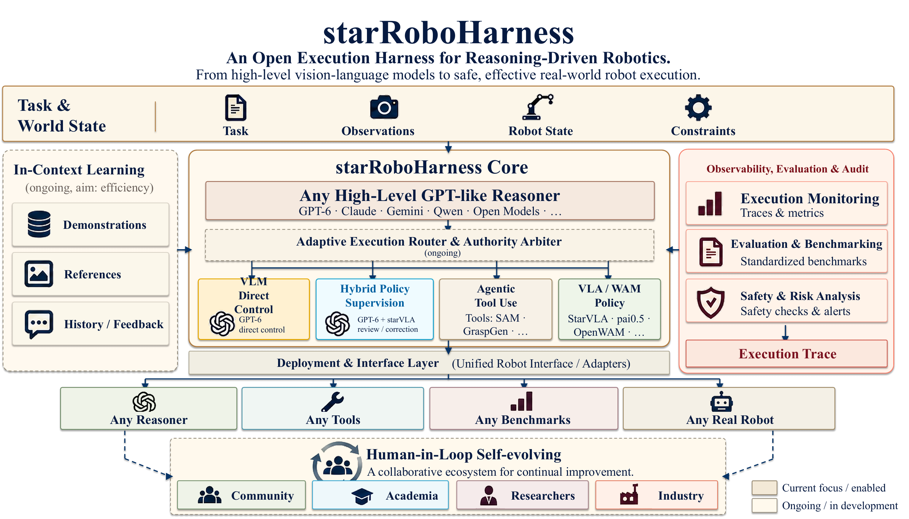
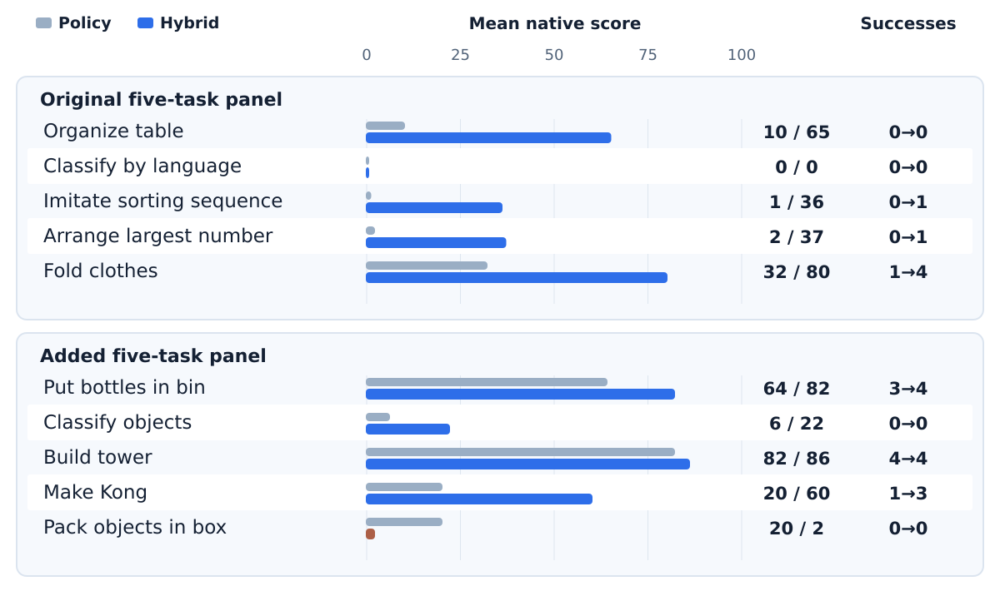

在推理决策与机器人动作之间建立可审计的边界
starRoboHarness 将策略提案绑定到精确观测，在执行前审查推理器决策，并记录实际动作确认和环境原生终止结果。策略、推理器与环境通过适配器接入。
我们整理了两组历史 RoboDojo 面板，每组有 5 个任务、每任务 5 个纯策略与混合方法的精确配对案例。第一组混合方法成功 6/25，纯策略成功 1/25；第二组分别为 11/25 和 8/25。任务间差异明显：打包任务的部分得分下降，而推理消耗很高。历史方法的执行节奏不同，因此这些结果不能单独证明纠正动作的因果收益。
关键词：机器人策略 · 多模态推理 · 混合控制 · 原生评测 · 执行轨迹

让推理在需要判断的时候介入
机器人策略能够快速生成连续动作；多模态推理器能够检查可见失败、判断下一段动作是否符合任务目标，并规划短程恢复。结合两者时，关键是明确何时授权推理器，以及如何核验授权后的真实执行结果。
在 starRoboHarness 中，学习得到的策略是默认控制器。推理器只读取公开的任务、图像、机器人状态和追踪证据；接管必须通过证据与安全门。原有任务指令和原生终止判定保持在环境端，策略、推理器与仿真平台可以通过适配器独立替换。
协议稳定
提案、决策、执行和结果使用明确契约，各模型和平台通过适配器连接。
证据门控
单纯的不确定性不能触发接管；修正应对应可观察的失败或意图偏离。
控制有界
混合方法的学生动作前缀最多 15 步，局部纠正最多 5 步，然后重新观测。
留下凭据
记录提案、决策、动作确认、环境原生结果、版本和资源使用。
策略生成动作，推理器选择性审查
每次控制循环从原始任务指令和精确观测开始。QwenPI_v3 提交动作段；推理器分别检查上一段真实执行情况与下一段可见动作意图。证据门决定沿用策略提案，或执行受限的末端执行器修正。安全验证与环境执行由明确的控制边界负责。
QwenPI_v3 使用三路有序 RGB 图像、双臂 14 维关节状态，并预测 50 × 14 的绝对关节动作；服务端采用固定的 arx_x5 归一化。纯策略基线每次重规划执行 16 步，历史混合方法执行至多 15 步学生前缀或至多 5 步局部纠正。这一节奏差异也是结果比较的一部分。
通过适配器连接外部系统
策略服务、推理服务和 RoboDojo 等环境实现均位于轻量核心包之外。
两组五任务面板，50 个精确配对案例
每组比较纯 QwenPI_v3 策略与 GPT-6 Astra 审查 QwenPI_v3 提案的混合方法。两组数据采集于不同阶段，因而分别报告。成功和得分均来自仿真环境的原生终止凭据。
混合方法 · 纯策略 1/25
混合方法 · 纯策略 8/25
混合方法 · 纯策略 9.0
混合方法 · 纯策略 38.4

原始五任务面板
每任务 5 个精确配对案例；得分为 0–100 的原生平均分。
| 任务 | 纯策略成功 | 混合方法成功 | 纯策略得分 | 混合方法得分 |
|---|---|---|---|---|
| 整理桌面 | 0/5 | 0/5 | 10 | 65 |
| 按语言分类 | 0/5 | 0/5 | 0 | 0 |
| 模仿排序序列 | 0/5 | 1/5 | 1 | 36 |
| 排列最大数字 | 0/5 | 1/5 | 2 | 37 |
| 叠衣服 | 1/5 | 4/5 | 32 | 80 |
| 本组汇总 | 1/25 | 6/25 | 9 | 43.6 |
新增五任务面板
每任务 5 个精确配对案例；得分为 0–100 的原生平均分。
| 任务 | 纯策略成功 | 混合方法成功 | 纯策略得分 | 混合方法得分 |
|---|---|---|---|---|
| 把瓶子放入箱中 | 3/5 | 4/5 | 64 | 82 |
| 物体分类 | 0/5 | 0/5 | 6 | 22 |
| 搭建塔楼 | 4/5 | 4/5 | 82 | 86 |
| 拼成「孔」字 | 1/5 | 3/5 | 20 | 60 |
| 把物体装入盒中 | 0/5 | 0/5 | 20 | 2 |
| 本组汇总 | 8/25 | 11/25 | 38.4 | 50.4 |
有原生终止凭据的超时仍计为有效失败。供应商或基础设施故障另记在尝试台账中。新增纯策略收集期间 18 次控制前故障不进入任一方法的分母。下载脱敏案例数据 · 下载汇总数据。
完成率、部分分与纠正次数需要一起看
叠衣服与 Make Kong 推动成功数增长
原始面板叠衣服从 1/5 升至 4/5；新增面板 Make Kong 从 1/5 升至 3/5。
得分增加不等于任务完成
新增面板物体分类平均得分从 6 升至 22，但两种方法都没有完成任何案例。
打包需要进一步分析轨迹
两种方法均为 0/5 成功，混合方法平均部分得分从 20 降至 2；五个混合案例都达到原生 1,300 步上限。
成功运行也可能没有纠正动作
早期搭塔成功案例与后来两次成功开发案例均记录零纠正步。因此必须分别评估推理器放行和接管的作用。
质量和成本应在同一张账本上
混合方法累计 4,627 个纠正步，报告了 4.625 亿输入 token 和 156 万输出 token；约 93.95% 的输入 token 记为缓存。这些数值是异步使用量快照，不是最终账单。
新增面板的平均控制循环用时分别为纯策略 330.5 秒和混合方法 4,999.8 秒。历史机器、传输方式与采集时期不同，不能据此得出受控的速度倍率。两组合并的混合方法描述性指标为 17/50 成功、平均得分 47.0。
选定案例回放
这些视频来自早期五任务网页版本，用于展示执行过程，不是上面 50 对案例的逐例证据。可以在各任务中切换纯策略和混合方法的回放。
同时报告质量、有效性与计算成本
有效比较要对齐任务、布局、随机种子、指令、动作契约和原生终止判定。成功不能由模型自报代替。
使用环境终止凭据，而非模型自报。
逐案例对齐任务、布局、种子与终止。
记录缺乏失败或意图偏离证据的干预。
检查观察到失败后是否恢复任务进度。
报告总调用、输入输出和缓存使用。
分别记录推理器决策和学生策略端到端时延。
实际动作中推理器纠正步所占比例。
把资源和基础设施故障与机器人失败分开。
下一步应检验什么
每任务只有五个配对案例。不同历史阶段的机器、供应商会话、恢复尝试和执行节奏并未全部固定。两组的 50 对数据合并后有 9 个仅混合方法成功、1 个仅纯策略成功、40 个持平；这是描述性计数，不是一项预先冻结的统一试验。
打包
追踪抓取确认后的耗时、每次纠正的转移距离，以及接管是否对应真实失败。
分类
记录超时前哪些物体获得部分得分，重复纠正是否回到同一状态。
受控重测
冻结方法身份，在一致的案例、硬件、模型服务路由和动作节奏下重新运行。
完整成本
同时报告成功、部分得分、纠正比例、调用、token、时延和排除的尝试。
另外，三个案例的 dev 验证是独立开发结果：两次成功、一次原生超时，没有同时收集的纯策略对照。Astra Direct 仅有报告中的一个早期、面板外搭塔案例，不属于上面的配对表。
从可信评测走向可迁移的执行层
复现
冻结方法清单与协议边界。
核心
建立契约、证据门、安全验证、追踪和一致性测试。
原生 QwenPI_v3
建立原生终止凭据，整理历史精确配对基线。
质量与效率的受控评测
分析打包和分类轨迹，冻结资源对齐的后续试验，同时报告质量与成本。
泛化
接入非 VLA 策略与第二个环境，保持核心包与平台实现解耦。
项目目标
让每次干预都有证据，让每个提升都经得起配对评测。
新策略只需接入适配器；每个结果都说明有效性边界、时延与计算成本。